1-5막 · 가면 축제의 사람들
한국어 번역은 독일어 원문에 대응하는 자동 번역 초안입니다.
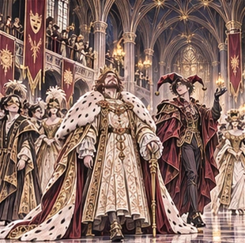
??? ?? ? ??? ??
PULCINELLE:
Ihr seid die Toren,
Gebückt geboren.
Wir sind die Klugen,
Die nie was trugen;풀시넬: 당신은 바보입니다 구부정하게 태어났습니다. 우리는 똑똑한 사람들이다 아무것도 입지 않은 사람;
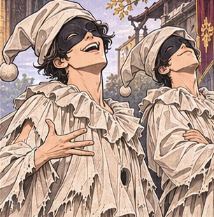
??? ?? ? ??? ??
Denn unsre Kappen,
Jacken und Lappen
Sind leicht zu tragen;
Und mit Behagen왜냐하면 우리 모자는, 재킷과 헝겊 휴대가 간편합니다. 그리고 기쁨으로
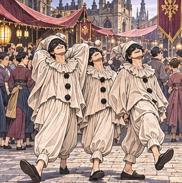
??? ?? ? ??? ??
Wir immer müßig,
Pantoffelfüßig,
Durch Markt und Haufen
Einherzulaufen,우리는 항상 한가하고, 슬리퍼 발, 시장과 힙을 통해 따라 달리다,
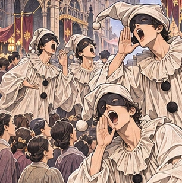
??? ?? ? ??? ??
Gaffend zu stehen,
Uns anzukrähen;
Auf solche Klänge
Durch Drang und Menge멍하니 서서, 우리에게 울부짖는다. 그런 소리를 하려면 충동과 수량을 통해
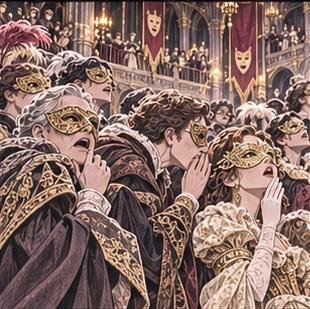
??? ?? ? ??? ??
Aalgleich zu schlüpfen,
Gesamt zu hüpfen,
Vereint zu toben.
Ihr mögt uns loben,장어처럼 부화하고, 완전히 뛰다, 함께 분노하기. 우리를 칭찬할 수도 있고,
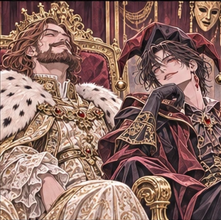
??? ?? ? ??? ??
Ihr mögt uns schelten,
Wir lassen's gelten.
PARASITEN:
Ihr wackern Träger
Und eure Schwäger,우리를 꾸짖을 수도 있고, 우리는 그것을 받아들일 것입니다. 기생충: 용감한 포터들아 그리고 당신의 형제들,
??? ?? ? ??? ??
Die Kohlenbrenner,
Sind unsre Männer.
Denn alles Bücken,
Bejahndes Nicken,석탄 버너, 우리 남자들이에요. 모든 것이 휘어지기 때문에, 긍정의 고개를 끄덕이며,
??? ?? ? ??? ??
Gewundne Phrasen,
Das Doppelblasen,
Das wärmt und kühlet,
Wie's einer fühlet,구불구불한 문구, 이중 입으로, 따뜻하기도 하고 시원하기도 하고, 기분이 어떤지
??? ?? ? ??? ??
Was könnt' es frommen?
Es möchte Feuer
Selbst ungeheuer
Vom Himmel kommen,그게 무슨 소용이 있겠어? 그것은 불을 원한다 심지어 엄청나게 천국에서 오시며,
??? ?? ? ??? ??
Gäb' es nicht Scheite
Und Kohlentrachten,
Die Herdesbreite
Zur Glut entfachten.로그가 없는 경우 그리고 석탄 의상, 무리의 범위 불씨가 붙었습니다.
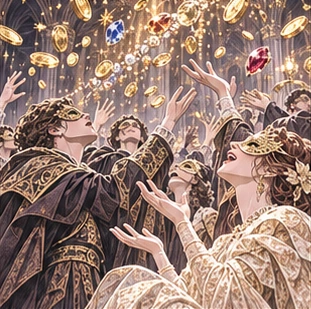
??? ?? ? ??? ??
Da brät's und prudelt's,
Da kocht's und strudelt's.
Der wahre Schmecker,
Der Tellerlecker,튀겨지고 보글보글 끓고 있어요 끓고 소용돌이 치고 있습니다. 진정한 맛보는 사람, 접시 리커,
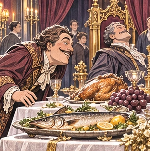
??? ?? ? ??? ??
Er riecht den Braten,
Er ahnet Fische;
Das regt zu Taten
An Gönners Tische.그에게서 구운 냄새가 나고, 그는 물고기를 감지합니다. 행동에 영감을 주는 것 고객의 테이블에서.
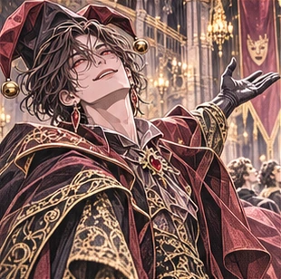
??? ?? ? ??? ??
TRUNKNER:
Sei mir heute nichts zuwider!
Fühle mich so frank und frei;
Frische Lust und heitre Lieder,
Holt' ich selbst sie doch herbei.트렁크너: 오늘은 나한테 화내지 마! 나는 너무 솔직하고 자유로워요. 신선한 욕망과 경쾌한 노래, 나는 그녀를 직접 데려왔다.
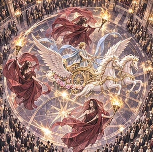
??? ?? ? ??? ??
Und so trink' ich! Trinke, trinke!
Stoßet an, ihr! Tinke, Tinke!
Du dorthinten, komm heran!
Stoßet an, so ist's getan.그래서 나는 마신다! 마셔, 마셔! 건배하세요, 당신! 팅케, 팅케! 거기 너, 이리와! 건배를 하면 완성입니다.
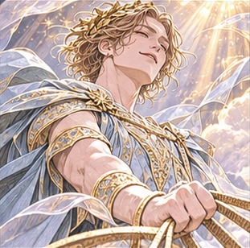
??? ?? ? ??? ??
Schrie mein Weibchen doch entrüstet,
Rümpfte diesem bunten Rock,
Und, wie sehr ich mich gebrüstet,
Schalt mich einen Maskenstock.아내가 분개해서 소리쳤습니다. 그 화려한 스커트에 주름이 잡혔고, 그리고 내가 얼마나 자랑했는지 마스크 스틱이라고 불러주세요.
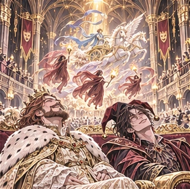
??? ?? ? ??? ??
Doch ich trinke! Trinke, trinke!
Angeklungen! Tinke, Tinke!
Maskenstöcke, stoßet an!
Wenn es klingt, so ist's getan.하지만 나는 마신다! 마셔, 마셔! 소리가 나지 않았습니다! 팅케, 팅케! 마스크드 스틱, 토스트! 소리가 좋으면 완료된 것입니다.
??? ?? ? ??? ??
Saget nicht, daß ich verirrt bin,
Bin ich doch, wo mir's behagt.
Borgt der Wirt nicht, borgt die Wirtin,
Und am Ende borgt die Magd.내가 길을 잃었다고 말하지 마세요. 나는 내가 좋아하는 곳에 어디에든 있다. 집주인이 안 빌려주면 집주인이 빌려주고, 그리고 결국 하녀가 빌립니다.
??? ?? ? ??? ??
Immer trink' ich! Trinke, trinke!
Auf, ihr andern! Tinke, Tinke!
Jeder jedem! so fortan!
Dünkt mich's doch, es sei getan.나는 항상 술을 마신다! 마셔, 마셔! 자, 나머지 여러분! 팅케, 팅케! 여러분! 지금부터! 완료된 것 같습니다.
??? ?? ? ??? ??
Wie und wo ich mich vergnüge,
Mag es immerhin geschehn;
Laß mich liegen, wo ich liege,
Denn ich mag nicht länger stehn.내가 즐기는 방법과 장소, 적어도 그런 일이 일어나도록 놔두세요. 내가 누워 있는 곳에 누워 있게 해주세요. 더 이상 서고 싶지 않기 때문이다.
??? ?? ? ??? ??
CHOR:
Jeder Bruder trinke, trinke!
Toastet frisch ein Tinke, Tinke!
Sitzet fest auf Bank und Span!
Unterm Tisch dem ist's getan.합창: 모든 형제가 마시게 하라, 마시라! Tinke를 갓 건배하세요, Tinke! 벤치와 칩에 단단히 앉아! 테이블 밑에서 이루어집니다.
??? ?? ? ??? ??
SATIRIKER:
Wißt ihr, was mich Poeten
Erst recht erfreuen sollte?
Dürft' ich singen und reden,
Was niemand hören wollte.풍자가: 나를 시인으로 만드는 것이 무엇인지 아시나요? 정말 즐겨야 할까요? 노래하고 이야기할 수 있다면 아무도 듣고 싶지 않은 것.
??? ?? ? ??? ??
AGLAIA:
Anmut bringen wir ins Leben;
Leget Anmut in das Geben.
HEGEMONE:
Leget Anmut ins Empfangen,
Lieblich ist's, den Wunsch erlangen.아글라이아: 우리는 삶에 은혜를 가져옵니다. 베푸는 데 은혜를 베푸십시오. 헤게모네: 받는 것에 은혜를 더하고, 소원을 얻는 것은 사랑스러운 일이다.
??? ?? ? ??? ??
EUPHRASYNE:
Und in stiller Tage Schranken
Höchst anmutig sei das Danken.
ATROPOS:
Mich, die älteste, zum Spinnen
Hat man diesmal eingeladen;유프라신: 그리고 조용한 날에는 장벽이 감사는 가장 우아합니다. 위축: 맏형인 나, 회전하다 이번에 초대되셨나요?
??? ?? ? ??? ??
Viel zu denken, viel zu sinnen
Gibt's beim zarten Lebensfaden.
Daß er euch gelenk und weich sei,
Wußt' ich feinsten Flachs zu sichten;생각할 것도 많고, 고민할 것도 많은 그것은 삶의 섬세한 실에서 가능합니다. 그것이 당신에게 유연하고 부드러울 수 있도록, 나는 가장 좋은 아마를 선별하는 방법을 알고 있었습니다.
??? ?? ? ??? ??
Daß er glatt und schlank und gleich sei,
Wird der kluge Finger schlichten.
Wolltet ihr bei Lust und Tänzen
Allzu üppig euch erweisen,그는 매끄럽고 호리호리하고 평등했고, 영리한 손가락이 중재할 것이다. 재미있게 놀고 춤추고 싶었나요? 자신을 너무 화려하게 보여라.
??? ?? ? ??? ??
Denkt an dieses Fadens Grenzen,
Hütet euch! Er möchte reißen.
KLOTHO:
Wißt, in diesen letzten Tagen
Ward die Schere mir vertraut;이 경계의 실을 기억하세요. 조심하세요! 그는 찢어지고 싶어합니다. 클로토: 알아두세요, 이 마지막 날에는 가위는 나에게 친숙했습니다.
??? ?? ? ??? ??
Denn man war von dem Betragen
Unsrer Alten nicht erbaut.
Zerrt unnützeste Gespinste
Lange sie an Licht und Luft,한 사람이 그런 행동을 했기 때문에 우리 장로들은 교화되지 않았습니다. 가장 쓸모없는 거미줄을 잡아 당깁니다. 빛과 공기 속에서 오랫동안,
??? ?? ? ??? ??
Hoffnung herrlichster Gewinste
Schleppt sie schneidend zu der Gruft.
Doch auch ich im Jugendwalten
Irrte mich schon hundertmal;가장 놀라운 이익을 얻으시기 바랍니다. 그녀를 무덤으로 끌고 갑니다. 하지만 나도 청소년 폭력에 나는 백 번이나 틀렸어요.
??? ?? ? ??? ??
Heute mich im Zaum zu halten,
Schere steckt im Futteral.
Und so bin ich gern gebunden,
Blicke freundlich diesem Ort;오늘은 내 자신을 점검하기 위해, 가위가 케이스에 들어있습니다. 그래서 나는 묶이는 걸 좋아해요. 이곳을 친절하게 살펴보세요.
??? ?? ? ??? ??
Ihr in diesen freien Stunden
Schwärmt nur immer fort und fort.
LACHESIS:
Mir, die ich allein verständig,
Blieb das Ordnen zugeteilt;이 자유 시간에는 당신의 것입니다 계속해서 열광하고 있습니다. 이완증: 홀로 이해하는 나, 배열은 할당된 상태로 유지되었습니다.
??? ?? ? ??? ??
Meine Weife, stets lebendig,
Hat noch nie sich übereilt.
Fäden kommen, Fäden weifen,
Jeden lenk' ich seine Bahn,내 아내는 언제나 살아있다. 서두르지 않았습니다. 실이 오고, 실이 풀리고, 나는 모든 사람을 그들의 길로 인도하고,
??? ?? ? ??? ??
Keinen lass' ich überschweifen,
Füg' er sich im Kreis heran.
Könnt' ich einmal mich vergessen,
Wär' es um die Welt mir bang;누구도 앞서가도록 두지 않겠습니다. 그 사람이 서클에 합류하게 해주세요. 한 번이라도 나 자신을 잊을 수 있다면, 내가 세상에 대해 걱정했다면;
??? ?? ? ??? ??
Stunden zählen, Jahre messen,
Und der Weber nimmt den Strang.
HEROLD:
Die jetzo kommen, werdet ihr nicht kennen,
Wärt ihr noch so gelehrt in alten Schriften;시간 계산, 연도 측정, 그리고 직공이 가닥을 잡습니다. 헤럴드: 지금 오는 자들을 너희는 알지 못하리라 당신은 여전히 고대 기록에 대해 그렇게 배웠습니까?
??? ?? ? ??? ??
Sie anzusehn, die so viel übel stiften,
Ihr würdet sie willkommne Gäste nennen.
Die Furien sind es, niemand wird uns glauben,
Hübsch, wohlgestaltet, freundlich, jung von Jahren;그렇게 많은 악을 일으키는 자들을 보면, 당신은 그들을 환영 손님이라고 부를 것입니다. Furies야, 아무도 우리를 믿지 않을 거야 예쁘고, 체격이 좋고, 친절하고, 나이가 어리다.
??? ?? ? ??? ??
Laßt euch mit ihnen ein, ihr sollt erfahren,
Wie schlangenhaft verletzen solche Tauben.
Zwar sind sie tückisch, doch am heutigen Tage,
Wo jeder Narr sich rühmet seiner Mängel,그들과 함께 참여해 보면 알게 될 것입니다. 뱀처럼 생긴 비둘기는 얼마나 상처를 받는가. 사실, 그들은 배신자입니다. 그러나 오늘날에는 모든 바보가 자신의 결점을 자랑하는 곳에서는
??? ?? ? ??? ??
Auch sie verlangen nicht den Ruhm als Engel,
Bekennen sich als Stadt- und Landesplage.
ALEKTO:
Was hilft es euch? ihr werdet uns vertrauen,
Denn wir sind hübsch und jung und Schmeichelkätzchen;그들은 또한 천사의 명성을 요구하지 않으며, 도시와 나라에 재앙이 닥칠 것이라고 공언합니다. 알렉토: 그것이 당신에게 어떻게 도움이 되나요? 당신은 우리를 믿을 것입니다, 우리는 예쁘고 젊고 아첨하는 사람들이기 때문입니다.
??? ?? ? ??? ??
Hat einer unter euch ein Liebeschätzchen,
Wir werden ihm so lang die Ohren krauen,
Bis wir ihm sagen dürfen, Aug' in Auge:
Daß sie zugleich auch dem und jenem winke,혹시 애인 있으신 분 계시나요? 우리는 오랫동안 그의 귀를 계속 긁을 것입니다 우리가 그에게 직접 말할 수 있을 때까지: 동시에 그녀도 이것저것 손을 흔들고,
??? ?? ? ??? ??
Im Kopfe dumm, im Rücken krumm, und hinke
Und, wenn sie seine Braut ist, gar nichts tauge.
So wissen wir die Braut auch zu bedrängen:머리는 멍청하고 등은 구부리고 절뚝거리고 그리고 그녀가 그의 신부라면 그녀는 전혀 좋지 않습니다. 신부를 괴롭히는 방법은 다음과 같습니다.
??? ?? ? ??? ??
Es hat sogar der Freund, vor wenig Wochen,
Verächtliches von ihr zu der gesprochen!--
Versöhnt man sich, so bleibt doch etwas hängen.
내 친구도 몇 주 전에는 그녀는 그녀에게 경멸적인 말을 했습니다!-- 화해하면 뭔가 남는다.